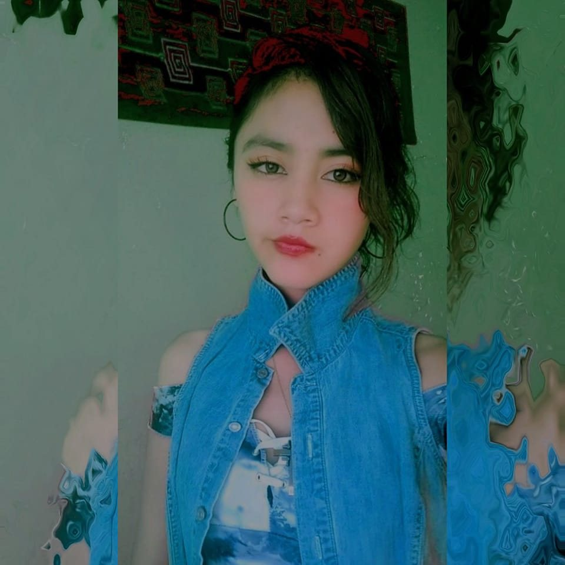

🐍 Automatización de reportes estadísticos
Proyecto orientado a automatizar tareas repetitivas relacionadas con la generación de reportes mediante Python.
Tecnologías:Python · Pandas · OpenPyXL
|
Transformando datos en información y procesos en soluciones tecnológicas mediante estadística, programación y automatización.

PERFIL PROFESIONAL
Una combinación entre estadística, tecnología y análisis de datos.
Soy Bachiller en Ingeniería Estadística e Informática, interesada en el análisis de datos, programación, automatización de procesos y desarrollo de soluciones orientadas al procesamiento de información estadística.
Mi formación integra conocimientos de estadística, informática y tecnologías de información, con especial interés en Python, análisis de datos, visualización y generación automatizada de reportes.
Actualmente continúo fortaleciendo mis conocimientos en programación, ciencia de datos, automatización y tecnologías de información.
Transformación e interpretación de información.
Programación y automatización de procesos.
Optimización de tareas repetitivas.
Aplicación de tecnología a problemas estadísticos.
FORMACIÓN ACADÉMICA
Formación orientada a la estadística, informática y análisis de datos.
Bachiller en Ingeniería Estadística e Informática.
EXPERIENCIA PROFESIONAL
Experiencia aplicada al procesamiento, análisis y difusión de información estadística.
Experiencia relacionada con el procesamiento, organización y difusión de información estadística, utilizando herramientas informáticas para mejorar la elaboración y presentación de información.
Procesamiento y organización de información.
Elaboración de reportes y materiales de difusión.
Uso de herramientas para procesamiento de datos.
Automatización y mejora de tareas repetitivas.
HERRAMIENTAS
Tecnologías utilizadas para el análisis, procesamiento y visualización de datos.
TRABAJOS DESTACADOS
Soluciones orientadas al análisis de datos y la automatización de procesos.
Proyecto orientado a automatizar tareas repetitivas relacionadas con la generación de reportes mediante Python.
Tecnologías:Python · Pandas · OpenPyXL
Desarrollo de análisis estadísticos y visualizaciones para facilitar la interpretación de información.
Tecnologías:Python · Pandas · Matplotlib · R · Power BI
INVESTIGACIÓN
Aplicación de métodos estadísticos y tecnológicos para resolver problemas reales.
Línea: Tecnologías de la información e ingeniería de software.
Sub-línea: Automatización de procesos y sistemas de información estadística.
El proyecto busca evaluar experimentalmente el efecto de una estrategia de automatización basada en Python sobre el tiempo de generación y la consistencia de reportes estadísticos.
HABLEMOS
Si deseas conocer más sobre mi trabajo, puedes contactarme.
📍 Puno, Perú
💼 LinkedIn: www.linkedin.com/in/catterine-quispe